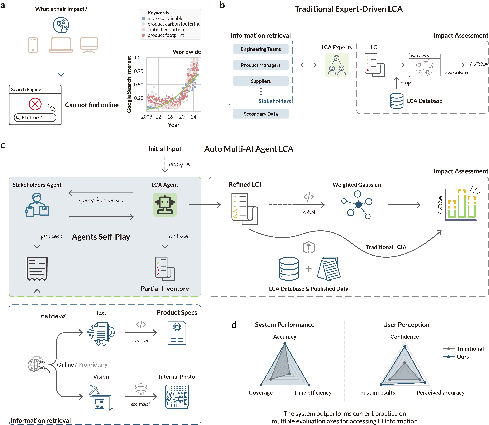

Reducing the growing environmental impact of the computing industry requires assessing the emissions of electronics at scale. However, a traditional life-cycle assessment (LCA) of an electronic device, which maps materials and processes to environmental impacts, often requires proprietary or unavailable data. Here we report a multimodal multi-agent artificial intelligence system that emulates the collaborative process between LCA professionals and stakeholders (such as product managers and engineers) to estimate the carbon footprint of electronic devices. The agents iteratively construct a complete life-cycle inventory by leveraging a structured data abstraction and software tools that mine information from the public Internet, including repair communities and government regulatory databases. This reduces data gaps and data collection from weeks or months of expert time to under 1 min. The system can calculate the carbon footprint within 19% of expert LCAs with zero proprietary data (typical of the variation between human LCAs). We also show that by encoding domain-specific knowledge, environmental impact estimation can be reframed as a data-driven prediction task, in which both unknown products and emission factors are represented as weighted combinations of similar ones with known emissions.
